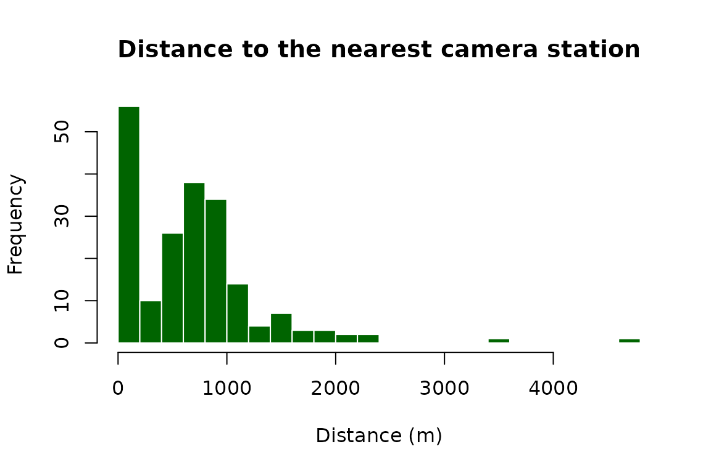

Where a camera is deployed shapes what it can detect and how its data can be pooled with others. WildObsR places camera coordinates in their Australian context by describing a spatial hierarchy, beginning with the state or territory, then to the IBRA bioregion and subregion, then to the nearest protected area. WildObsR also offers tools to help with metric map projection, and quickly determining the spacing between neighbouring cameras. The state, bioregion and protected-area layers ship with the package, so everything here runs offline. This vignette uses the two projects bundled with WildObsR, one from several national parks in the Queensland Wet Tropics and one from Woomargama National Park in New South Wales.
# load the R package
library(WildObsR)
# load the two projects shipped with WildObsR
dp_list <- example_datapackages()
# combine both deployments tables for both projects
deps <- do.call(rbind, lapply(dp_list, function(dp) {
# this project's deployments, read with their schema types
d <- frictionless::read_resource(dp, "deployments")
# subset the deployments to only include spatial information
d[, c("deploymentID", "locationID", "locationName", "latitude", "longitude")]
}))
# de-duplicate by removing the first duplicated locationID,
# since one locationID can contain several cameras
stations <- deps[!duplicated(deps$locationID), ]
# remove row names and count how many rows
rownames(stations) <- NULL
# and count how many rows
nrow(stations)
#> [1] 173State or territory
The function AUS_state_locator() adds the state or
territory each camera falls in, from the boundaries exported in the ozmaps R
package. State matters because threatened-species listings, and so the
obscuring of public records, differ between states.
# calculate the state of every station
stations <- AUS_state_locator(stations)
# inspect which states were sampled
table(stations$state)
#>
#> NSW QLD
#> 28 145IBRA bioregion and subregion
The Interim Biogeographic Regionalisation for Australia (IBRA 7) divides the continent into 89 bioregions and 419 subregions of similar climate, geology and vegetation. It is a common unit for pooling surveys and for reporting.
# calculate the bioregion and subregion of every station
stations <- ibra_classification(stations, lat_col = "latitude", long_col = "longitude")
#>
#>
#> |IBRAbioRegionName |IBRAsubRegionName | number_of_DeploymentIDs|
#> |:------------------------|:-------------------|-----------------------:|
#> |Wet Tropics |Bellenden Ker-Lamb | 58|
#> |Wet Tropics |Daintree-Bloomfield | 45|
#> |Wet Tropics |Atherton | 35|
#> |NSW South Western Slopes |Inland Slopes | 28|
#> |Wet Tropics |Innisfail | 6|
#> |Wet Tropics |Macalister | 1|
# view bioregion
table(stations$IBRAbioRegionName)
#>
#> NSW South Western Slopes Wet Tropics
#> 28 145
# and subregions
table(stations$IBRAsubRegionName)
#>
#> Atherton Bellenden Ker-Lamb Daintree-Bloomfield Inland Slopes
#> 35 58 45 28
#> Innisfail Macalister
#> 6 1Protected areas
WildObs locationName values are defined using the
spatial hierarchy described above. Two functions are used to check
sampling locations against the Collaborative Australian Protected Areas
Database (CAPAD
2022). locationName_verification_CAPAD() names the
protected area each camera is in, or the nearest one and the distance to
it in metres. locationName_buffer_CAPAD() draws a buffer
around each camera, merges buffers that overlap into one landscape, and
names each landscape after the protected area that covers most of it,
which groups nearby cameras into the same unit.
# select a few stations from each project, to keep the example quick
few <- stations[stations$locationID %in% c("CFRAG_01_WildObsID_0001", "CFRAG_08_WildObsID_0001",
"8_WildObsID_0010", "33_WildObsID_0010"), ]
# calculate the protected area each camera is in, or nearest to, beside the recorded locationName
verified <- locationName_verification_CAPAD(few)
#> [1] "There are 1 coordinates that did not produce a value from the CAPAD shape file. Now calcuating Euclidian distances to the nearest feature in the shape file."
#> Note: Distance to nearest feature in CAPAD shape file is between 1-5 km for locationID 33_WildObsID_0010_2021_a_Cam1 to Woomargama_SCA
# inspect the results
verified[, c("locationID", "locationName", "CAPADlocationName", "CAPADminDistance")]
#> locationID locationName CAPADlocationName
#> 18 33_WildObsID_0010 Woomargama_NP Woomargama_SCA
#> 27 8_WildObsID_0010 Woomargama_NP Woomargama_NP
#> 29 CFRAG_01_WildObsID_0001 Eacham_Curtain_Fig_NPs Crater_Lakes_NP
#> 36 CFRAG_08_WildObsID_0001 Eacham_Curtain_Fig_NPs Curtain_Fig_NP
#> CAPADminDistance
#> 18 2567.193
#> 27 0.000
#> 29 0.000
#> 36 0.000
# calculate cameras whose 1 km buffers overlap share a landscape, named by its main protected area
buffered <- locationName_buffer_CAPAD(few, buffer_size = 1000)
#> [1] "No intersection in CAPAD for buffered locationName: Landscape_1"
#> [1] "We searched the nearest neighboring protected area for this locationName and determined it was: Jingellic_NR"
# inspect the results
buffered[, c("locationID", "CAPADlocationNameBuffer")]
#> locationID CAPADlocationNameBuffer
#> 1 33_WildObsID_0010 Landscape_1_Jingellic_NR
#> 2 8_WildObsID_0010 Landscape_2_Woomargama_NP
#> 3 CFRAG_01_WildObsID_0001 Landscape_3_Crater_Lakes_NP
#> 4 CFRAG_08_WildObsID_0001 Landscape_4_Curtain_Fig_NPA recorded locationName can differ from the CAPAD name
for good reasons. WildObs data curation, along with data provider input,
inspects each clustering to ensure locationName represents
one clear landscape name, even when it spans several reserves. For
example, the two Wet Tropics cameras above sit in Crater Lakes and
Curtain Fig National Parks, and their landscape is recorded as
Eacham_Curtain_Fig_NPs since both national parks neighbour
each other. A camera can also sit outside every reserve: Woomargama
station 33 is about 2.6 km from the nearest protected area, Woomargama
State Conservation Area, while its landscape is recorded as the national
park to better group several nearby cameras in a homogeneous protected
area. Its 1 km buffer touches no reserve, so
locationName_buffer_CAPAD() names that landscape after the
nearest one it finds instead. Treat a difference as a prompt to look and
potentially correct the output, not as an error.
Metric coordinates
Distances and grids need coordinates in metres.
UTM_coord_generator() projects each camera into the
Universal Transverse Mercator zone its longitude falls in, and returns
the zone with the coordinates.
# calculate the UTM zone, easting (X) and northing (Y) in metres for every deployment
utm <- UTM_coord_generator(deps)
# inspect
head(utm)
#> deploymentID UTMzone X Y
#> 1 CFRAG_01_WildObsID_0001_2022_Cam1 55 354560.2 -1912279
#> 2 CFRAG_01_WildObsID_0001_2022_Cam2 55 354560.2 -1912279
#> 3 CFRAG_02_WildObsID_0001_2022_Cam1 55 354334.5 -1911990
#> 4 CFRAG_02_WildObsID_0001_2022_Cam2 55 354334.5 -1911990
#> 5 CFRAG_03_WildObsID_0001_2022_Cam1 55 354319.3 -1911180
#> 6 CFRAG_03_WildObsID_0001_2022_Cam2 55 354319.3 -1911180Spacing between cameras
find_nearest_neighbor_distance() gives the distance from
each station to its nearest neighbour. Camera spacing decides whether
neighbouring stations can be treated as independent sites for a species
with a given home range, and which grid cell size suits a pooled
analysis.
# calculate the nearest other station to each station, and how far it is
nn <- find_nearest_neighbor_distance(deps)
# inspect summary stats of spacing (in metres)
summary(nn$distance)
#> Min. 1st Qu. Median Mean 3rd Qu. Max.
#> 35.17 84.90 637.00 676.75 920.01 4764.17
hist(nn$distance, breaks = 30, main = "Distance to the nearest camera station",
xlab = "Distance (m)", col = "darkgreen", border = "white")
Data sources
The CAPAD 2022 terrestrial and IBRA 7 subregion layers ship with
WildObsR as the datasets capad and ibra,
simplified for size. Both are © Commonwealth of Australia (Department of
Climate Change, Energy, the Environment and Water), licensed under
Creative Commons Attribution. State boundaries come from the
ozmaps package.